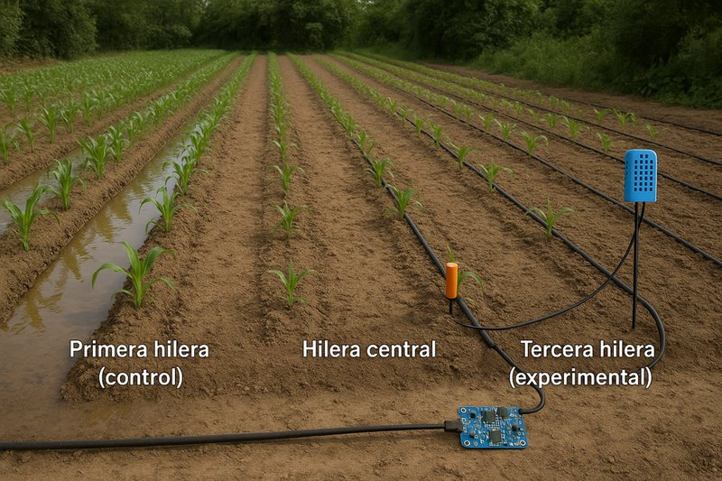
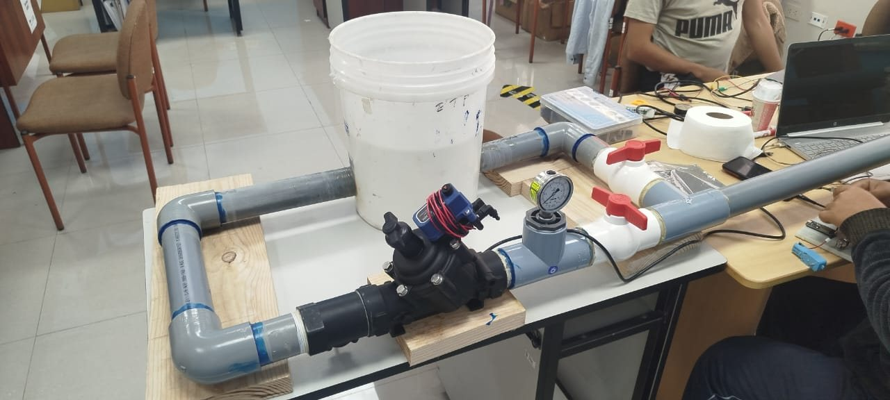
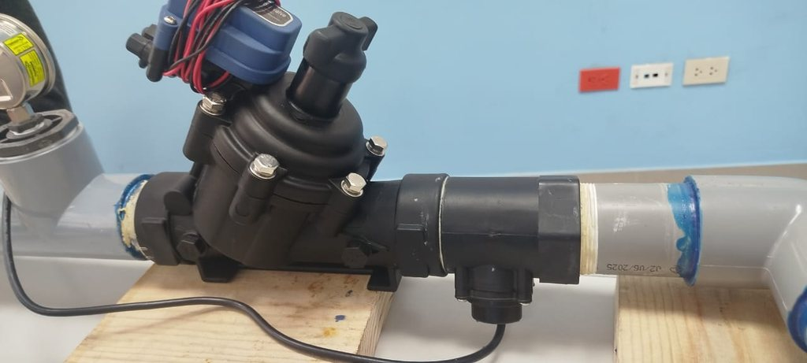
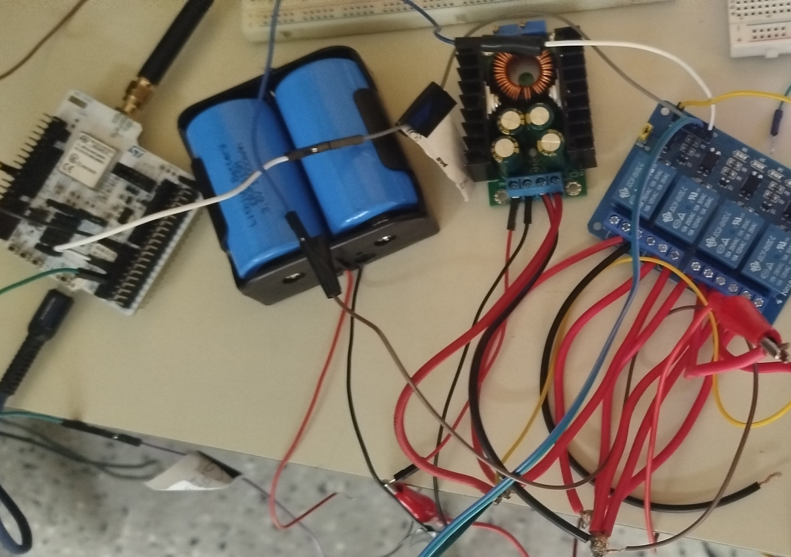
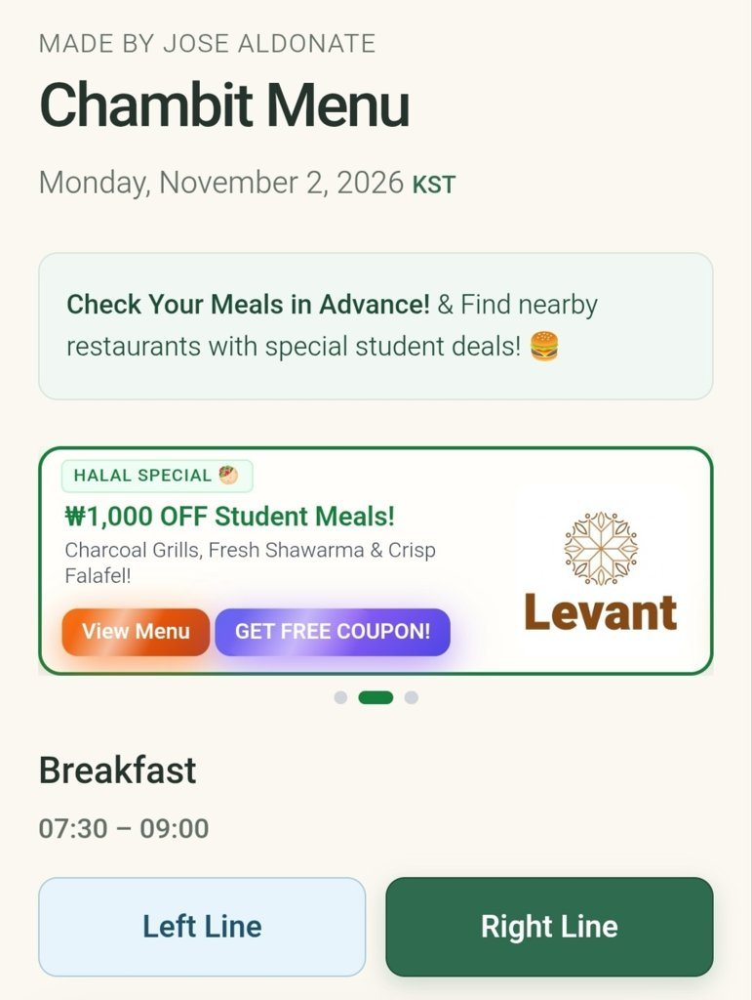
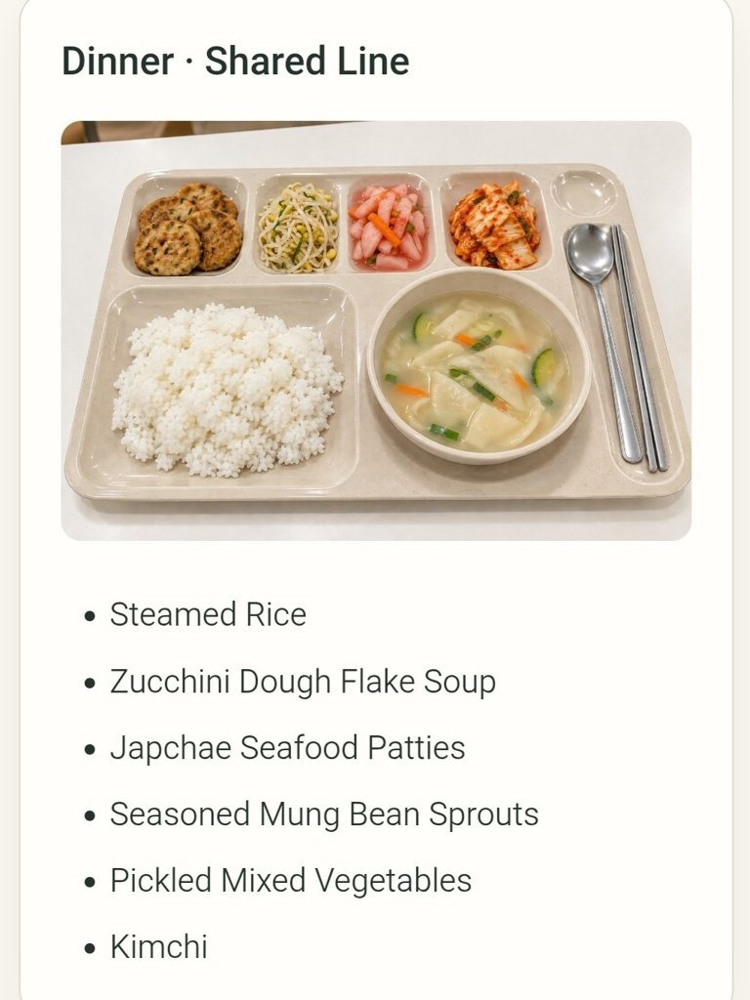
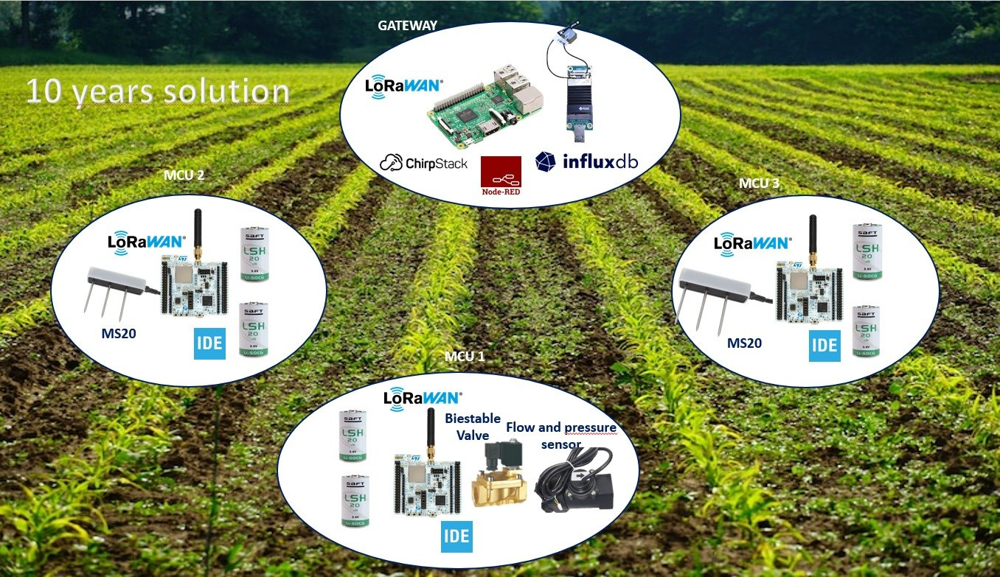
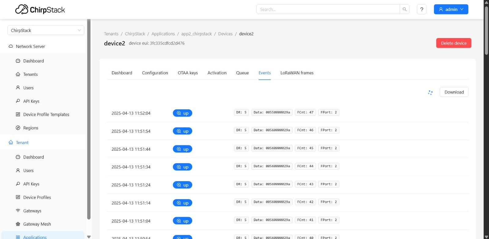

Design and analyze circuits
Electric circuits · electronic and digital circuit design · laboratory work
Applied toUnderstanding and testing hardware interfaces and valve-control circuitry.
ACADEMIC PROFILE
Mechatronics Engineering at the National University of Engineering, Peru
Exchange studies at Jeonbuk National University, Republic of Korea
MECHATRONICS ENGINEERING
Selected coursework organized by capability and the kinds of work it enabled.
Electric circuits · electronic and digital circuit design · laboratory work
Sensors and signal conditioning · embedded systems · classical control
Object-oriented programming · numerical methods · mathematics
Course names are grouped from the UNI academic record; project examples describe application, not formal course outcomes.
ITS & SMART CITY INSTITUTE · UNI
A student-led investigation into sensor-based irrigation and low-power wireless communication.




COURSEWORK AND APPLICATION
First semesterIntroductory AI study and Engineering Science Capstone Design I, including teamwork on document-information extraction.
Current semesterWeb Service Design and Digital Vision and Motion: software development alongside programming with hardware.
Applied projectChambit Menu brings daily meal information, English descriptions and visual previews together for international students.


INTERNATIONAL ENGINEERING AND SCIENCE
My studies in mechatronics and my exchange experience have strengthened my interest in interdisciplinary engineering, software services and the practical use of AI tools.
I hope to continue developing technical depth through coursework and collaborative projects while contributing to the university community.
Thank you for your time and consideration.
Jose Aldonate
PERU PROJECT / 01
A field visit to Fundo Casa Blanca informed the irrigation problem. The project materials propose STM32-based nodes, sensors, a gateway and a bistable valve designed to avoid continuous hold power.
Architecture is a proposal, not evidence that all nodes were deployed in the field.

PERU PROJECT / 02
The team tested a valve-and-piping setup and worked on STM32/LoRaWAN communications. The research slides show device traffic received in ChirpStack. I also helped coordinate the team and its conference presentation.
The tests shown here do not demonstrate completed field deployment or measured water savings.

CHAMBIT MENU / 01
Menus can be difficult to use when the dish name is unfamiliar or a visual reference is missing. Chambit Menu combines daily meal information, English descriptions and AI-assisted meal previews.
Work on the service connects my JBNU coursework with implementation, checking accuracy and improving the experience over time.
CHAMBIT MENU / 02 · USAGE EVIDENCE
| Date | Value |
|---|
Statistics from the last 05 weeks of the Fall Semester show weekly usage growth.